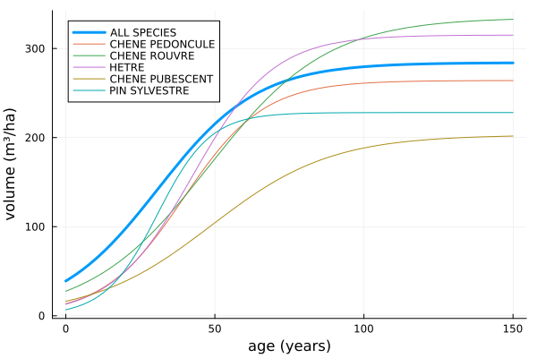

Tutorial
This page is generated by Literate.jl from the plain Julia script docs/lit/tutorial.jl: comments become text, code is run and its output is shown.
using ForestGrowthExample, DataFrames, PlotsLoading the data
By default the data of the French National Forest Inventory is downloaded from the urls used in the course (local files can be given instead, e.g. load_data(tree_data = "data/arbres_foret_2012.csv", ...)):
data = load_data()
first(data, 5)5×6 DataFrame
| Row | idp | esspre | cac | vHa | ntrees | spLabel |
|---|---|---|---|---|---|---|
| Int64 | Int64? | Float64 | Float64 | Int64 | DataStri…? | |
| 1 | 700017 | 3 | 37.5 | 34.5425 | 11 | CHENE ROUVRE |
| 2 | 700024 | 52 | 47.5 | 313.564 | 20 | PIN SYLVESTRE |
| 3 | 700038 | 3 | 62.5 | 385.997 | 14 | CHENE ROUVRE |
| 4 | 700039 | 10 | 67.5 | 124.424 | 7 | CHATAIGNIER |
| 5 | 700050 | 9 | 52.5 | 69.2226 | 9 | HETRE |
Fitting the growth model for all species
pars = estimate_plot_growth(data)(max_growth = 284.0966016127669, growth_rate = 0.05957797132634104, mid_age = 30.837982850175653)Fitting the growth model for the 5 main species
speciesCount = sort(combine(groupby(data, :spLabel), nrow => :count), :count, rev = true)
mainSpecies = speciesCount.spLabel[1:5]5-element Vector{Union{Missing, DataStrings.DataString}}:
"CHENE PEDONCULE"
"CHENE ROUVRE"
"HETRE"
"CHENE PUBESCENT"
"PIN SYLVESTRE"volume(age, p) = p.max_growth / (1 + exp(-p.growth_rate * (age - p.mid_age)))
plot(age -> volume(age, pars), 0, 150, label = "ALL SPECIES", linewidth = 3, legend = :topleft,
xlabel = "age (years)", ylabel = "volume (m³/ha)")
for sp in mainSpecies
plot!(age -> volume(age, estimate_plot_growth(data, sp)), 0, 150, label = sp)
end
current()
This page was generated using Literate.jl.